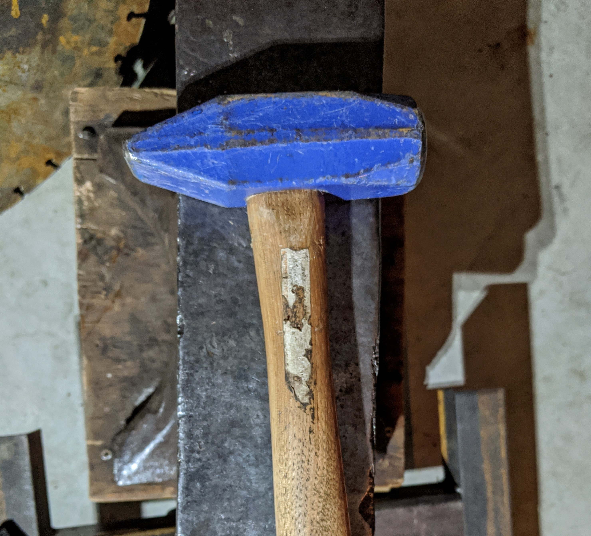

So what do you really need to get started?
I am going to list the supplies in three levels: Basic, Beginner, and Intermediate
Basic
If you want to spend the least amount of money possible and don't mind scorching a section of your yard or gravel lot, this is perfect for you. For the heat source, dig a trench about 1 foot wide and 3 feet long. Then get something that blows air like a fan and put it pointing down at a shallow angle into the trench. Then get a cross-peen, ball-peen, or regular hammer if you have none of those. Finally, get a piece of steel that is at least 1/2" thick and big enough to provide the surface area you need to pound on for whatever you are forging. Light a fire in the opposite end of the trench from the fan and get a well-established fire going before turning on the fan, so you don't blow it out. Then heat up your steel and get pounding! You will also want a pair of tongs or pliers with which you can grab your work with.

Intermediate
If you have a little bit of money or time, the best way to get a good-quality anvil without breaking to bank is to find a small section of railroad track. I found a piece at my local metal junkyard. if that doesn't work for you, you can get a cheap harbor freight cast iron anvil, but keep in mind that you are probably forging steel so the thing you are forging is harder than the anvil. If you hapen to have a welder, you could weld a steel plate to the top of a Harbor Freight anvil and that would work.
You can continue using the trench method, or you can get a small charcoal BBQ and use that, along with charcoal, for your fire. for the air flow you have two options. you can either find some way to point the fan into the top of the BBQ at an angle, or you can use some other type of blower that allows you to push air into the bottom of the BBQ like a reversed shop vac or something similar.
Hammers are really simple. The one I would reccomend is a cross-peen hammer like the one in the picture on the main page. About 2-3 lbs is probably a safe bet to start with. Don't spend more than $15 on it. You will also want a pair of tongs or pliers with which you can grab your work with. anything that can grab the piece you are working with works.
Advanced
If you have a decent bit of money you want to throw into the forging thing, then getting a nice anvil is #1 or #2 on your list (I talk about the other important thing in the Fire section). You don't need anything to massive, so nothing over 160lbs (unless you find a really good deal). Anvil prices vary quite a bit and may be anywhere from $2 or $3 to upwards of $6. You can generally find one for cheap if you keep an eye out on craigslist and ask family friends. You'd be suprised how many people have anvils sitting on their farms or in their shops or garages.
This is going to be #1 or #2 on your list if you want to get serious with forging. Now, as I said earlier I have zero experience with coal forging so this is all going to be about propane forging. If you want to get a good setup and you don't mind spending some money, buy yourself some good-quality forge burners. The issues with building your own (there a ton of videos out there like this one by the king of random) is that it will never be quite as precise and good quality as a machined one. that said, if you want to save some money and are feeling adventurous you can try it, I personally just don't reccomend it.
Nothing changes really in terms of the hammer category. you might want to buy yourself a ball peen hammer also to supplement the cross peen. In addition to this you will want to make at leat two good pairs of tongs (more on that on the Getting Started page).